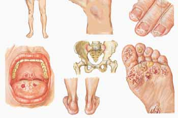

El VIH, o virus de inmunodeficiencia humana,7 es el virus que causa el SIDA (síndrome de inmunodeficiencia adquirida). El VIH destruye el sistema inmunitario del organismo al matar las células que combaten las infecciones. Una vez que el VIH ha destruido una porción considerable de estas células, la capacidad del cuerpo de combatir las infecciones y recuperarse de ellas se ve comprometida. Esta etapa avanzada de la infección por el VIH se conoce como SIDA. Las personas cuyo VIH ha avanzado hasta convertirse en SIDA son muy propensas a contraer infecciones oportunistas que normalmente no enfermarían a una persona sana, así como determinados tipos de cáncer. El SIDA puede prevenirse si las personas infectadas con el VIH comienzan de manera temprana un tratamiento con antirretrovirales. La transmisión del virus ocurre principalmente durante la actividad sexual sin protección y al compartir agujas para inyectarse drogas intravenosas, si bien el virus también puede transmitirse de la madre al bebé durante el embarazo, el parto y el amamantamiento. En 2013, investigadores apoyados por los NIH informaron que la infección por el VIH de una niña de dos años que había nacido con el virus y que recibió tratamiento desde los primeros días de vida había entrado en remisión. Este parece ser el primer caso de una cura funcional del VIH.

La clamidia1 es una STD/STI común causada por la bacteria Chlamydia trachomatis. La clamidia puede transmitirse durante el contacto sexual vaginal, oral o anal con la pareja infectada. Si bien muchas personas no presentan síntomas, la clamidia puede causar fiebre, dolor abdominal y flujo inusual del pene o la vagina. En las mujeres, tengan o no síntomas y desconozcan o no que tienen una infección, la clamidia puede causar la enfermedad pélvica inflamatoria (PID por sus siglas en inglés en el contenido de Inglés). En la PID, la STD/STI sin tratar avanza y afecta otras partes del sistema reproductor de la mujer, incluido el útero y las trompas de Falopio. Este avance puede provocar un daño permanente en los órganos reproductivos de la mujer. El daño podría provocar un embarazo ectópico (en el que el feto se desarrolla en lugares anormales fuera del útero, trastorno que podría ser mortal) e infertilidad. Además, si la mujer está embarazada, el feto en desarrollo corre riesgo, porque la clamidia puede transmitirse durante el embarazo o el parto y puede provocar infecciones oculares o neumonía en el bebé. Si la clamidia se detecta de manera temprana, puede tratarse fácilmente con un antibiótico por vía oral.